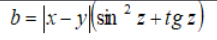

Лабораторная работа №1
Гуценков Никита. Вариант 7
Задание 1
Вы совершаете покупку в магазинах евроторга. Написать сценарий, в котором с использованием метода prompt вводится
общая сумма покупки, вводится скидка в размере от 1 до 5 %. В окне документа должны быть отображены: общая
стоимость покупки, скидка в рублях и стоимость покупки со скидкой.
Задание 2
В соответствии с вариантом необходимо написать скрипт для вычисления значения переменной b. Исходные данные
вводятся с использованием метода prompt. При выводе информации предусмотреть форматирование документа, вывод
текста задания, включая рисунок исходного выражения, и вывод информации о разработчике скрипта.

Задание 3
Пусть в скрипте задана переменная lang, которая может принимать значения «ru», «en», «fr» или «de», введенные
пользователем. Используя операторы if-else-elseif обеспечьте вывод на экран полного названия языка (русский,
английский и т.д.) в зависимости от того, что присвоено переменной lang. Обязательно предусмотрите случай
неверного задания значения переменной lang - тогда должна выводиться надпись «Язык неизвестен».
Задание 4
Сделайте тоже самое, что в задании 3, но используя оператор switch (скрипт lab1-4.html)
Задание 5
В соответствии со своим вариантом необходимо написать Java-скрипт для вычисления значения функции
y. В выводимом файле предусмотреть форматирование документа, вывод текста задания на лабораторную работу,
включая рисунок исходной функции, и вывод информации о разработчике скрипта.
Задание 6
В скрипте, используя вложенные циклы for, отобразите на экране таблицу 10×10, в ячейках которой идут
числа от 1 до 100. При этом красным цветом выделены «треугольные» числа, т.е. числа вида n(n+1)/2 (где n=1,2,…
14). Все другие числа черного цвета. Массивы не использовать! Ширина рамки таблицы равна 1, отступ содержимого
ячеек от границы равен 5.